Probability, efficiency and \(\Delta\)R#
Show code cell source
import h5py
import awkward as ak
import vector
import numpy as np
import pandas as pd
import matplotlib.pyplot as plt
import matplotlib as mpl
import mplhep as hep
from matplotlib.colors import LogNorm
hep.style.use(hep.style.ROOT)
mpl.rcParams['figure.dpi'] = 50
vector.register_awkward()
INFO:SparkMonitorKernel:SparkMonitor comm opened from frontend.
Show code cell source
df = h5py.File('./SPANet/0903_output_v5_matched.h5','r')
df_input = h5py.File('./SPANet/data/tth_matched_2.h5','r')
#fields = ['pt','eta','phi','btag']
#jets = ak.zip({
# f: df["INPUTS"]["Source"][f][()] for f in fields
#}, with_name="Momentum4D")
#jets["m"] = np.zeros_like(jets.pt)
#jets[0].tolist()
Show code cell source
df_jets = ak.from_parquet("/eos/user/d/dvalsecc/www/ttHbbAnalysis/training_dataset/all_jets_v6.parquet")
(jets,
partons_matched,
partons,
generator_info,
lepton_partons,
lepton_reco,
met
) = ak.unzip(df_jets)
jets = ak.with_name(jets, name="Momentum4D")
lepton_reco = ak.with_name(lepton_reco, name="Momentum4D")
met = ak.with_name(met, name="Momentum4D")
# Get fully matched jets from df_jets
mask_fullymatched = ak.sum(jets.matched == True, axis=1)==7
jets = jets[jets.matched == True]
higgs = jets[jets.prov == 1]
jets = jets[ak.num(higgs) == 2]
w_or_t_jets = jets[(jets.prov == 5)|(jets.prov == 2)]
jets = jets[ak.num(w_or_t_jets) == 3]
lep_top = jets[jets.prov == 3]
jets = jets[ak.num(lep_top) == 1]
Assignment probabilities#
Plot distribution of assignment probabilities for ttH
Show code cell source
h_assign = df["TARGETS/h/assignment_probability"]
t1_assign = df["TARGETS/t1/assignment_probability"]
t2_assign = df["TARGETS/t2/assignment_probability"]
Show code cell source
plt.hist(h_assign, bins=50)
plt.title("Higgs")
plt.xlabel("Assignment probability")
plt.show()
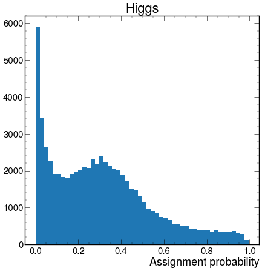
Show code cell source
plt.hist(t1_assign, bins=50)
plt.title("Hadronic top")
plt.xlabel("Assignment probability")
plt.show()
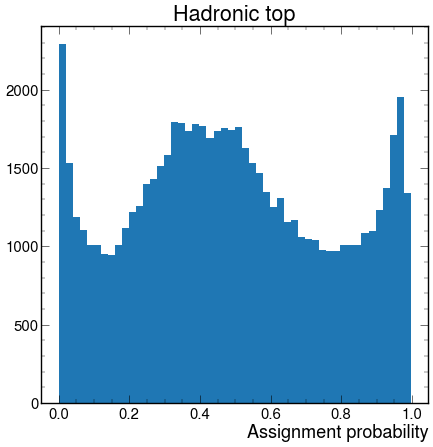
Show code cell source
plt.hist(t2_assign, bins=50)
plt.title("Leptonic top")
plt.xlabel("Assignment probability")
plt.show()
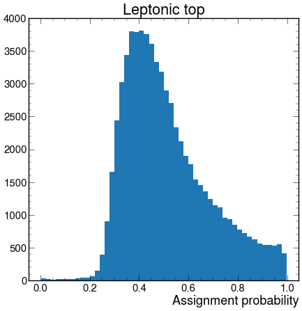
Detection probabilities#
Show code cell source
h_detect = df["TARGETS/h/detection_probability"]
t1_detect = df["TARGETS/t1/detection_probability"]
t2_detect = df["TARGETS/t2/detection_probability"]
Show code cell source
plt.hist(h_detect, bins=50)
plt.title("Higgs")
plt.xlabel("Detection probability")
plt.xlim(0,1)
plt.show()
plt.hist(t1_detect, bins=50)
plt.title("Hadronic top")
plt.xlabel("Detection probability")
plt.xlim(0,1)
plt.show()
plt.hist(t2_detect, bins=50)
plt.title("Leptonic top")
plt.xlabel("Detection probability")
plt.xlim(0,1)
plt.show()
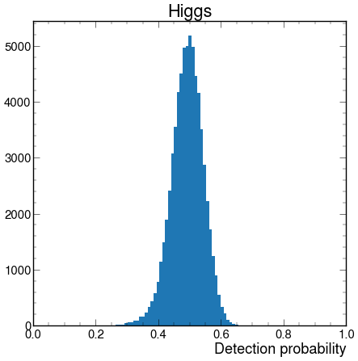
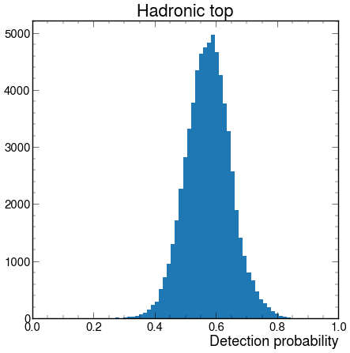
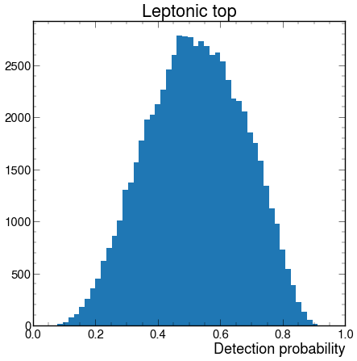
Leptonic top invariant mass#
Reconstruct leptonic top with leptonic information
Show code cell source
jets = jets[jets.matched == True]
higgs = jets[jets.prov == 1]
mask_match = ak.num(higgs) == 2
w_or_t_jets = jets[(jets.prov == 5)|(jets.prov == 2)]
mask_match = mask_match & (ak.num(w_or_t_jets) == 3)
lep_top = jets[jets.prov == 3]
mask_match = mask_match & (ak.num(lep_top) == 1)
jets = jets[mask_match]
lepton_reco = lepton_reco[mask_match]
met = met[mask_match]
Show code cell source
# Leptonic top jets
t2_b_pred = ak.Array(df["TARGETS"]["t2"]["b"][()])
t2_b_pred = ak.unflatten(t2_b_pred, ak.ones_like(t2_b_pred))
t2_b_true = ak.Array(df_input["TARGETS"]["t2"]["b"][()])
t2_b_true = ak.unflatten(t2_b_true, ak.ones_like(t2_b_true))
leptop_index_pred = t2_b_pred
leptop_index_true = t2_b_true
leptop_jet_pred = jets[leptop_index_pred]
leptop_jet_true = jets[leptop_index_true]
Show code cell source
plt.hist((lepton_reco[:] + met[:] + leptop_jet_true[:,0]).m, bins=100,
density=True, histtype="step", label="true")
plt.hist((lepton_reco[:] + met[:] + leptop_jet_pred[:,0]).m, bins=100,
density=True, histtype="step", label="predicted")
plt.xlim(0,800)
plt.xlabel(r"$m_{l\nu b}$")
plt.title("Leptonic top")
plt.legend()
plt.show()
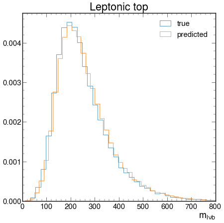
2D efficiency (H and t1)#
Efficiency plot in 2D with Higgs pt and t1 pt. When t1 has low pt, is H efficiency high etc…
Show code cell source
def get_leptop_arrays(n, njets, mode="partial"):
# Leptonic top jets
t2_b_pred = ak.Array(df["TARGETS"]["t2"]["b"][()])
t2_b_pred = ak.unflatten(t2_b_pred, ak.ones_like(t2_b_pred))
t2_b_true = ak.Array(df_input["TARGETS"]["t2"]["b"][()])
t2_b_true = ak.unflatten(t2_b_true, ak.ones_like(t2_b_true))
leptop_index_pred = t2_b_pred
leptop_index_true = t2_b_true
if mode == "partial":
leptop_index_pred = leptop_index_pred[ak.num(jets)==n]
leptop_index_true = leptop_index_true[ak.num(jets)==n]
leptop_jet_pred = njets[leptop_index_pred]
leptop_jet_true = njets[leptop_index_true]
mask = (leptop_jet_true == leptop_jet_pred)
leptop_pred_correct = leptop_jet_pred[mask] # correctly predicted jets
leptop_pred_wrong = leptop_jet_pred[~mask] # wrongly predicted jets
leptop_pred_correct = leptop_pred_correct[ak.num(leptop_pred_correct)>0]
leptop_pred_wrong = leptop_pred_wrong[ak.num(leptop_pred_wrong)>0]
return leptop_pred_correct, leptop_pred_wrong
def get_higgs_arrays(n, njets, mode="partial"):
H_b1_true = ak.Array(df_input["TARGETS"]["h"]["b1"][()])
H_b2_true = ak.Array(df_input["TARGETS"]["h"]["b2"][()])
H_b1_true = ak.unflatten(H_b1_true, ak.ones_like(H_b1_true))
H_b2_true = ak.unflatten(H_b2_true, ak.ones_like(H_b2_true))
H_b1_pred = ak.Array(df["TARGETS"]["h"]["b1"][()])
H_b2_pred = ak.Array(df["TARGETS"]["h"]["b2"][()])
H_b1_pred = ak.unflatten(H_b1_pred, ak.ones_like(H_b1_pred))
H_b2_pred = ak.unflatten(H_b2_pred, ak.ones_like(H_b2_pred))
higgs_index_true = ak.concatenate((H_b1_true, H_b2_true), axis=1)
higgs_index_pred = ak.concatenate((H_b1_pred, H_b2_pred), axis=1)
if mode == "partial":
higgs_index_true = higgs_index_true[ak.num(jets)==n]
higgs_index_pred = higgs_index_pred[ak.num(jets)==n]
higgs_jet_true = njets[higgs_index_true]
higgs_jet_pred = njets[higgs_index_pred]
mask = (higgs_jet_true == higgs_jet_pred)
higgs_pred_correct = higgs_jet_pred[mask] # correctly predicted jets
higgs_pred_wrong = higgs_jet_pred[~mask] # wrongly predicted jets
higgs_pred_correct = higgs_pred_correct[ak.num(higgs_pred_correct)==2]
higgs_pred_wrong = higgs_pred_wrong[ak.num(higgs_pred_wrong)>0]
return higgs_pred_correct, higgs_pred_wrong
def get_hadtop_arrays(n, njets, mode="partial"):
t1_q1_true = ak.Array(df_input["TARGETS"]["t1"]["q1"][()])
t1_q2_true = ak.Array(df_input["TARGETS"]["t1"]["q2"][()])
t1_b_true = ak.Array(df_input["TARGETS"]["t1"]["b"][()])
t1_q1_true = ak.unflatten(t1_q1_true, ak.ones_like(t1_q1_true))
t1_q2_true = ak.unflatten(t1_q2_true, ak.ones_like(t1_q2_true))
t1_b_true = ak.unflatten(t1_b_true, ak.ones_like(t1_b_true))
t1_q1_pred = ak.Array(df["TARGETS"]["t1"]["q1"][()])
t1_q2_pred = ak.Array(df["TARGETS"]["t1"]["q2"][()])
t1_b_pred = ak.Array(df["TARGETS"]["t1"]["b"][()])
t1_q1_pred = ak.unflatten(t1_q1_pred, ak.ones_like(t1_q1_pred))
t1_q2_pred = ak.unflatten(t1_q2_pred, ak.ones_like(t1_q2_pred))
t1_b_pred = ak.unflatten(t1_b_pred, ak.ones_like(t1_b_pred))
hadtop_index_true = ak.concatenate((t1_q1_true, t1_q2_true, t1_b_true), axis=1)
hadtop_index_pred = ak.concatenate((t1_q1_pred, t1_q2_pred, t1_b_pred), axis=1)
if mode == "partial":
hadtop_index_true = hadtop_index_true[ak.num(jets)==n]
hadtop_index_pred = hadtop_index_pred[ak.num(jets)==n]
hadtop_jet_true = njets[hadtop_index_true]
hadtop_jet_pred = njets[hadtop_index_pred]
mask = (hadtop_jet_true == hadtop_jet_pred)
hadtop_pred_correct = hadtop_jet_pred[mask] # correctly predicted jets
hadtop_pred_wrong = hadtop_jet_pred[~mask] # wrongly predicted jets
hadtop_pred_correct = hadtop_pred_correct[ak.num(hadtop_pred_correct)==3]
hadtop_pred_wrong = hadtop_pred_wrong[ak.num(hadtop_pred_wrong)>0]
return hadtop_pred_correct, hadtop_pred_wrong
def calculate_efficiency(particle, n, njets, mode="partial"):
if particle == "h":
pred_correct, pred_wrong = get_higgs_arrays(n, njets, mode)
if particle == "t1":
pred_correct, pred_wrong = get_hadtop_arrays(n, njets, mode)
if particle == "t2":
pred_correct, pred_wrong = get_leptop_arrays(n, njets, mode)
print(f"\nNumber of correctly predicted within {n} jets is {len(pred_correct)}")
print(f"Number of wrongly predicted within {n} jets is {len(pred_wrong)}")
print(f"Total within {n} jets is {len(njets)}")
purity = len(pred_correct)/len(njets)
print(f"{n}-jet efficiency is {purity:.3f}")
return pred_correct, pred_wrong
Show code cell source
def find_bin(value, bins):
""" bins is a list of tuples, like [(0,20), (20, 40), (40, 60)],
binning returns the smallest index i of bins so that
bin[i][0] <= value < bin[i][1]
"""
for i in range(0, len(bins)):
if bins[i][0] <= value < bins[i][1]:
return i
return -1
def create_bins(lower_bound, width, quantity):
""" create_bins returns an equal-width (distance) partitioning.
It returns an ascending list of tuples, representing the intervals.
A tuple bins[i], i.e. (bins[i][0], bins[i][1]) with i > 0
and i < quantity, satisfies the following conditions:
(1) bins[i][0] + width == bins[i][1]
(2) bins[i-1][0] + width == bins[i][0] and
bins[i-1][1] + width == bins[i][1]
"""
bins = []
for low in range(lower_bound, lower_bound + quantity*width + 1, width):
bins.append((low, low+width))
return bins
Show code cell source
def pt_efficiency(true_pt, pred_pt, nbins, binwidth):
# Bin the array of predicted pts
data = pd.DataFrame({"pt": pred_pt})
bins = create_bins(lower_bound=0, width=binwidth, quantity=nbins)
bin_means = []
for i in range(len(bins)):
bin_means.append((bins[i][0] + bins[i][1])/2)
bins = pd.IntervalIndex.from_tuples(bins)
data['pt_bin'] = pd.cut(data['pt'], bins=bins)
# Find all counts (correctly and wrongly predicted -- denominator of efficiency)
a = data['pt_bin'].value_counts(sort=False)
a.index = a.index.astype(str)
a = a.to_dict()
all_counts = np.array(list(a.values()))
# Construct correctly predicted and wrongly predicted jet pts
mask = (true_pt == pred_pt)
# Find counts of correctly predicted events
data['correct'] = mask
data = data[data['correct']==True]
c = data['pt_bin'].value_counts(sort=False)
c.index = c.index.astype(str)
c = c.to_dict()
correct_counts = np.array(list(c.values()))
# Find the efficiency for each interval
bin_efficiency = np.zeros(len(correct_counts))
for i in range(len(all_counts)):
if all_counts[i] > 0: # disregard empty bins and assign 0 efficiency to them
bin_efficiency[i] = correct_counts[i]/all_counts[i]
else:
bin_efficiency[i] = 0
return bin_means, bin_efficiency
Show code cell source
H_b1_true = ak.Array(df_input["TARGETS"]["h"]["b1"][()])
H_b2_true = ak.Array(df_input["TARGETS"]["h"]["b2"][()])
H_b1_true = ak.unflatten(H_b1_true, ak.ones_like(H_b1_true))
H_b2_true = ak.unflatten(H_b2_true, ak.ones_like(H_b2_true))
H_b1_pred = ak.Array(df["TARGETS"]["h"]["b1"][()])
H_b2_pred = ak.Array(df["TARGETS"]["h"]["b2"][()])
H_b1_pred = ak.unflatten(H_b1_pred, ak.ones_like(H_b1_pred))
H_b2_pred = ak.unflatten(H_b2_pred, ak.ones_like(H_b2_pred))
higgs_index_true = ak.concatenate((H_b1_true, H_b2_true), axis=1)
higgs_index_pred = ak.concatenate((H_b1_pred, H_b2_pred), axis=1)
higgs_jet_true = jets[higgs_index_true]
higgs_jet_pred = jets[higgs_index_pred]
higgs_true_pt = (higgs_jet_true[:,0] + higgs_jet_true[:,1]).pt
higgs_pred_pt = (higgs_jet_pred[:,0] + higgs_jet_pred[:,1]).pt
t1_q1_true = ak.Array(df_input["TARGETS"]["t1"]["q1"][()])
t1_q2_true = ak.Array(df_input["TARGETS"]["t1"]["q2"][()])
t1_b_true = ak.Array(df_input["TARGETS"]["t1"]["b"][()])
t1_q1_true = ak.unflatten(t1_q1_true, ak.ones_like(t1_q1_true))
t1_q2_true = ak.unflatten(t1_q2_true, ak.ones_like(t1_q2_true))
t1_b_true = ak.unflatten(t1_b_true, ak.ones_like(t1_b_true))
t1_q1_pred = ak.Array(df["TARGETS"]["t1"]["q1"][()])
t1_q2_pred = ak.Array(df["TARGETS"]["t1"]["q2"][()])
t1_b_pred = ak.Array(df["TARGETS"]["t1"]["b"][()])
t1_q1_pred = ak.unflatten(t1_q1_pred, ak.ones_like(t1_q1_pred))
t1_q2_pred = ak.unflatten(t1_q2_pred, ak.ones_like(t1_q2_pred))
t1_b_pred = ak.unflatten(t1_b_pred, ak.ones_like(t1_b_pred))
hadtop_index_true = ak.concatenate((t1_q1_true, t1_q2_true, t1_b_true), axis=1)
hadtop_index_pred = ak.concatenate((t1_q1_pred, t1_q2_pred, t1_b_pred), axis=1)
hadtop_jet_true = jets[hadtop_index_true]
hadtop_jet_pred = jets[hadtop_index_pred]
hadtop_true_pt = (hadtop_jet_true[:,0] + hadtop_jet_true[:,1] + hadtop_jet_true[:,2]).pt
hadtop_pred_pt = (hadtop_jet_pred[:,0] + hadtop_jet_pred[:,1] + hadtop_jet_pred[:,2]).pt
Show code cell source
h_means, h_efficiency = pt_efficiency(higgs_true_pt, higgs_pred_pt,
nbins=150, binwidth=5)
t1_means, t1_efficiency = pt_efficiency(hadtop_true_pt, hadtop_pred_pt,
nbins=150, binwidth=5)
plt.hist2d(t1_means, h_efficiency)
plt.xlabel("t1 pt")
plt.ylabel("H efficiency")
plt.colorbar()
plt.show()
plt.hist2d(h_means, t1_efficiency)
plt.xlabel("H pt")
plt.ylabel("t1 efficiency")
plt.colorbar()
plt.show()
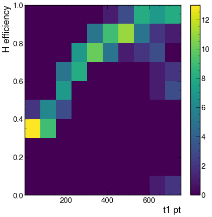
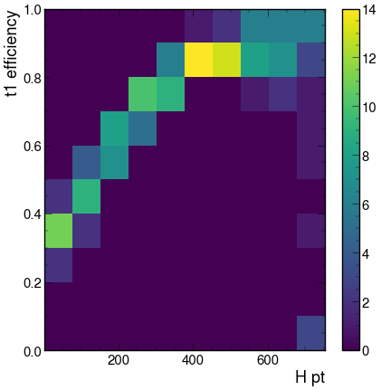
h_means, h_efficiency = pt_efficiency(higgs_true_pt, higgs_pred_pt,
nbins=150, binwidth=5)
t1_means, t1_efficiency = pt_efficiency(hadtop_true_pt, hadtop_pred_pt,
nbins=150, binwidth=5)
plt.hist2d(t1_means, h_means)
plt.xlabel("t1 pt")
plt.ylabel("H efficiency")
plt.colorbar()
plt.show()
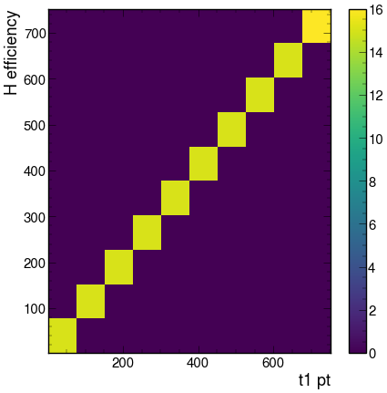
Show code cell source
plt.plot(h_means, h_efficiency, marker='o')
plt.plot(t1_means, t1_efficiency, marker='o')
[<matplotlib.lines.Line2D at 0x7ff1280bd3a0>]
Difference in pt#
How far apart in pt are the correct jet and the predicted jet (for each particle). In these plots I exclude the correct predictions.
Show code cell source
difference = abs(higgs_true_pt - higgs_pred_pt)
# Exclude correct predictions, i.e. zero differences
difference = difference[difference > 0.]
print(f"Average pt difference: {np.mean(difference):.3f}")
print(f"Median pt difference: {np.median(difference):.3f}")
print(f"Maximum pt difference: {np.max(difference):.3f}")
print(f"Minimum pt difference: {np.min(difference):.3f}")
plt.hist(difference, bins=100)
plt.xlabel("|predicted pt - true pt|")
plt.title("Higgs")
plt.show()
Average pt difference: 64.149
Median pt difference: 47.997
Maximum pt difference: 772.323
Minimum pt difference: 0.002
Show code cell source
difference = higgs_true_pt - higgs_pred_pt
# Exclude correct predictions, i.e. zero differences
difference = difference[difference != 0.]
print(f"Average pt difference: {np.mean(difference):.3f}")
print(f"Median pt difference: {np.median(difference):.3f}")
print(f"Maximum pt difference: {np.max(difference):.3f}")
print(f"Minimum pt difference: {np.min(difference):.3f}")
plt.hist(difference, bins=100)
plt.xlabel("predicted pt - true pt")
plt.title("Higgs")
plt.show()
Average pt difference: 21.408
Median pt difference: 18.505
Maximum pt difference: 675.493
Minimum pt difference: -772.323

# rms of delta pt over pt
difference = higgs_true_pt - higgs_pred_pt
# Exclude correct predictions, i.e. zero differences
#true_pt = higgs_true_pt[difference != 0.]
#difference = difference[difference != 0.]
rms_difference = np.sqrt(np.sum(difference**2)/len(difference))
plt.hist(difference/higgs_true_pt, bins=100, range=(-5,5))
plt.xlabel("(predicted pt - true pt)/true pt")
plt.title("Higgs")
plt.show()
print(f"rms: {rms_difference:.3f}")
true_pt = higgs_true_pt[difference != 0.]
difference = difference[difference != 0.]
print(f"Average pt difference: {np.mean(difference):.3f}")
print(f"Median pt difference: {np.median(difference):.3f}")
print(f"Maximum pt difference: {np.max(difference):.3f}")
print(f"Minimum pt difference: {np.min(difference):.3f}")
plt.hist(difference/true_pt, bins=100, range=(-5,5))
plt.xlabel("(predicted pt - true pt)/true pt")
plt.title("Higgs (excluding correct predictions)")
plt.show()
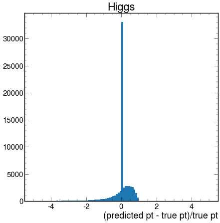
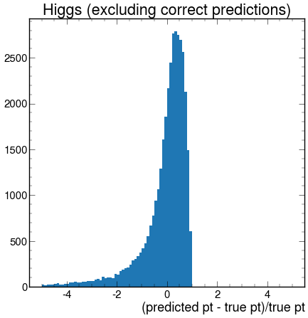
rms: 64.705
Average pt difference: 21.408
Median pt difference: 18.505
Maximum pt difference: 675.493
Minimum pt difference: -772.323
Show code cell source
difference = abs(hadtop_true_pt - hadtop_pred_pt)
# Exclude correct predictions, i.e. zero differences
difference = difference[difference > 0.]
print(f"Average pt difference: {np.mean(difference):.3f}")
print(f"Median pt difference: {np.median(difference):.3f}")
print(f"Maximum pt difference: {np.max(difference):.3f}")
print(f"Minimum pt difference: {np.min(difference)}")
plt.hist(difference, bins=100)
plt.xlabel("|predicted pt - true pt|")
plt.title("Hadronic top")
plt.show()
Average pt difference: 61.858
Median pt difference: 45.092
Maximum pt difference: 676.104
Minimum pt difference: 9.5367431640625e-07
Show code cell source
difference = hadtop_true_pt - hadtop_pred_pt
# Exclude correct predictions, i.e. zero differences
#difference = difference[difference != 0.]
rms_difference = np.sqrt(np.sum(difference**2)/len(difference))
plt.hist(difference/hadtop_true_pt, bins=100, range=(-5,5))
plt.xlabel("(predicted pt - true pt)/true pt")
plt.title("Hadronic top")
plt.show()
print(f"rms: {rms_difference:.3f}")
true_pt = hadtop_true_pt[difference != 0.]
difference = difference[difference != 0.]
print(f"Average pt difference: {np.mean(difference):.3f}")
print(f"Median pt difference: {np.median(difference):.3f}")
print(f"Maximum pt difference: {np.max(difference):.3f}")
print(f"Minimum pt difference: {np.min(difference)}")
plt.hist(difference/true_pt, bins=100, range=(-5,5))
plt.xlabel("(predicted pt - true pt)/true pt")
plt.title("Hadronic top (excluding correct predictions)")
plt.show()
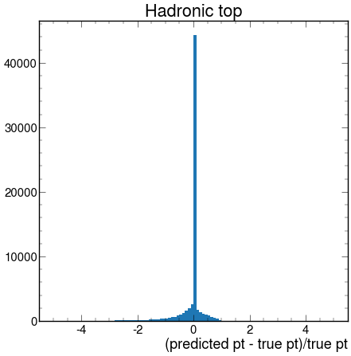
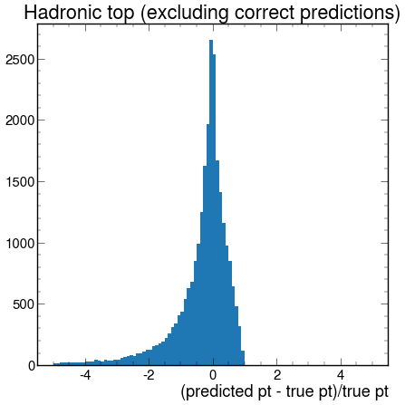
rms: 54.151
Average pt difference: -20.459
Median pt difference: -15.451
Maximum pt difference: 625.641
Minimum pt difference: -676.1036987304688
Show code cell source
# Leptonic top jets
t2_b_pred = ak.Array(df["TARGETS"]["t2"]["b"][()])
t2_b_pred = ak.unflatten(t2_b_pred, ak.ones_like(t2_b_pred))
t2_b_true = ak.Array(df_input["TARGETS"]["t2"]["b"][()])
t2_b_true = ak.unflatten(t2_b_true, ak.ones_like(t2_b_true))
leptop_index_pred = t2_b_pred
leptop_index_true = t2_b_true
leptop_jet_pred = jets[leptop_index_pred]
leptop_jet_true = jets[leptop_index_true]
leptop_pred_pt = leptop_jet_pred[:,0].pt
leptop_true_pt = leptop_jet_true[:,0].pt
Show code cell source
difference = abs(leptop_true_pt - leptop_pred_pt)
# Exclude correct predictions, i.e. zero differences
difference = difference[difference > 0.]
print(f"Average pt difference: {np.mean(difference):.3f}")
print(f"Median pt difference: {np.median(difference):.3f}")
print(f"Maximum pt difference: {np.max(difference):.3f}")
print(f"Minimum pt difference: {np.min(difference):.3f}")
plt.hist(difference, bins=100)
plt.xlabel("|predicted pt - true pt|")
plt.title("Leptonic top")
plt.show()
Average pt difference: 45.625
Median pt difference: 31.750
Maximum pt difference: 782.156
Minimum pt difference: 0.016
Show code cell source
difference = leptop_true_pt - leptop_pred_pt
# Exclude correct predictions, i.e. zero differences
#difference = difference[difference != 0.]
rms_difference = np.sqrt(np.sum(difference**2)/len(difference))
plt.hist(difference/leptop_true_pt, bins=100, range=(-5,5))
plt.xlabel("(predicted pt - true pt)/true pt")
plt.title("Leptonic top")
plt.show()
print(f"rms: {rms_difference:.3f}")
true_pt = leptop_true_pt[difference != 0.]
difference = difference[difference != 0.]
print(f"Average pt difference: {np.mean(difference):.3f}")
print(f"Median pt difference: {np.median(difference):.3f}")
print(f"Maximum pt difference: {np.max(difference):.3f}")
print(f"Minimum pt difference: {np.min(difference)}")
plt.hist(difference/true_pt, bins=100, range=(-5,5))
plt.xlabel("(predicted pt - true pt)/true pt")
plt.title("Leptonic top (excluding correct predictions)")
plt.show()
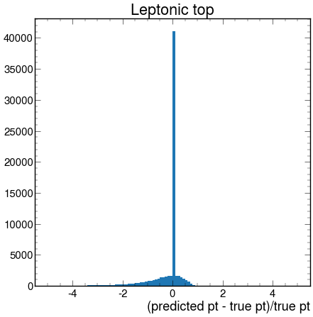
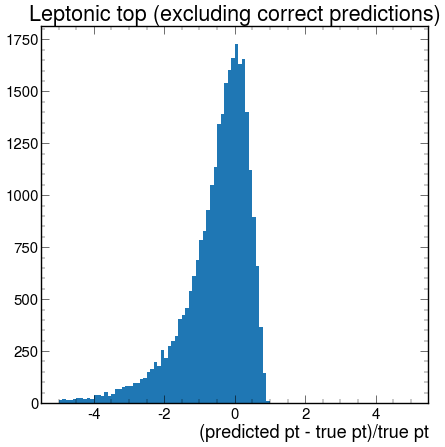
rms: 42.421
Average pt difference: -18.939
Median pt difference: -17.094
Maximum pt difference: 782.156
Minimum pt difference: -422.1875
Difference in \(\Delta\)R#
Show code cell source
deltar = ak.flatten(higgs_jet_true.deltaR(higgs_jet_pred))
# delete correctly predicted
deltar = deltar[deltar != 0.]
print(f"Average delta R: {np.mean(deltar):.3f}")
print(f"Median delta R: {np.median(deltar):.3f}")
print(f"Maximum delta R: {np.max(deltar):.3f}")
print(f"Minimum delta R: {np.min(deltar):.3f}")
plt.hist(deltar, bins=40)
plt.xlabel(r"$\Delta R$")
plt.title("Higgs")
plt.show()
Average delta R: 1.886
Median delta R: 1.845
Maximum delta R: 4.759
Minimum delta R: 0.392
Show code cell source
deltar = ak.flatten(hadtop_jet_true.deltaR(hadtop_jet_pred))
# delete correctly predicted
deltar = deltar[deltar != 0.]
print(f"Average delta R: {np.mean(deltar):.3f}")
print(f"Median delta R: {np.median(deltar):.3f}")
print(f"Maximum delta R: {np.max(deltar):.3f}")
print(f"Minimum delta R: {np.min(deltar):.3f}")
plt.hist(deltar, bins=40)
plt.xlabel(r"$\Delta R$")
plt.title("Hadronic top")
plt.show()
Average delta R: 1.822
Median delta R: 1.753
Maximum delta R: 5.511
Minimum delta R: 0.391
Show code cell source
deltar = ak.flatten(leptop_jet_true.deltaR(leptop_jet_pred))
# delete correctly predicted
deltar = deltar[deltar != 0.]
print(f"Average delta R: {np.mean(deltar):.3f}")
print(f"Median delta R: {np.median(deltar):.3f}")
print(f"Maximum delta R: {np.max(deltar):.3f}")
print(f"Minimum delta R: {np.min(deltar):.3f}")
plt.hist(deltar, bins=40)
plt.xlabel(r"$\Delta R$")
plt.title("Leptonic top")
plt.show()
Average delta R: 1.999
Median delta R: 2.011
Maximum delta R: 5.511
Minimum delta R: 0.401